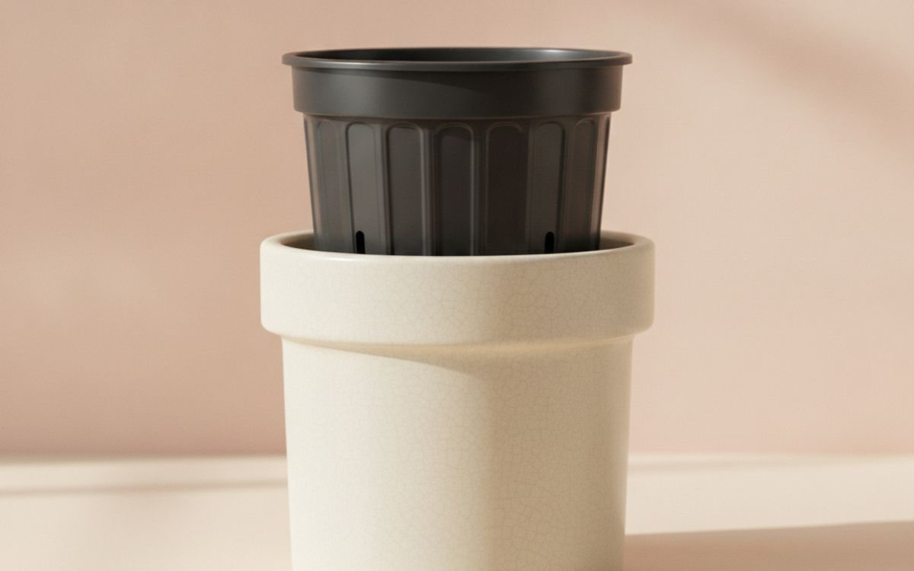
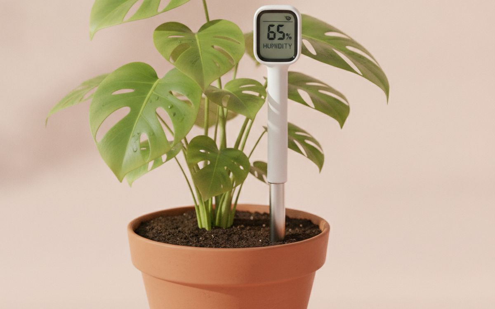
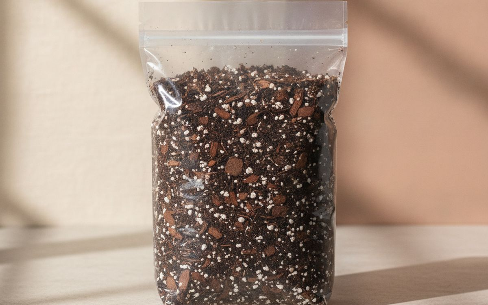
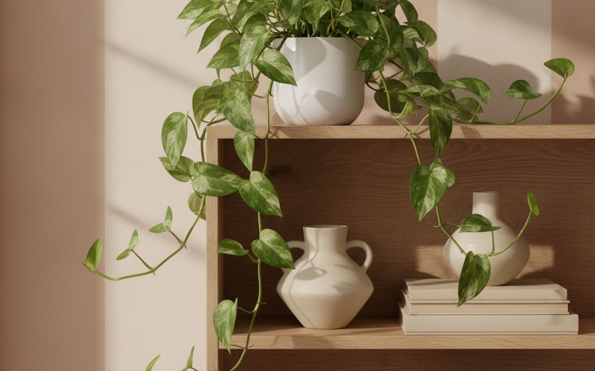
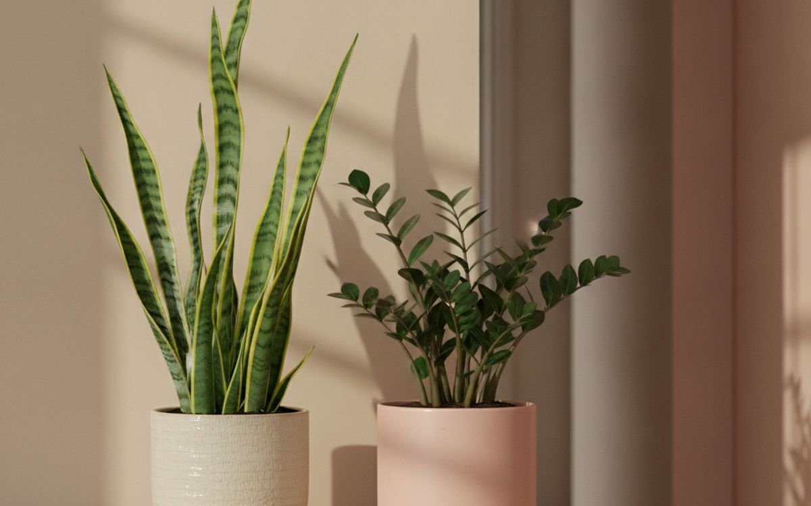
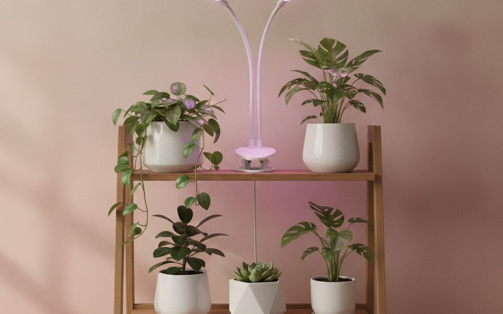
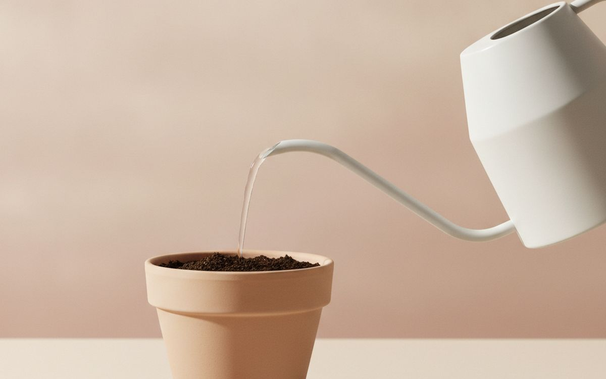
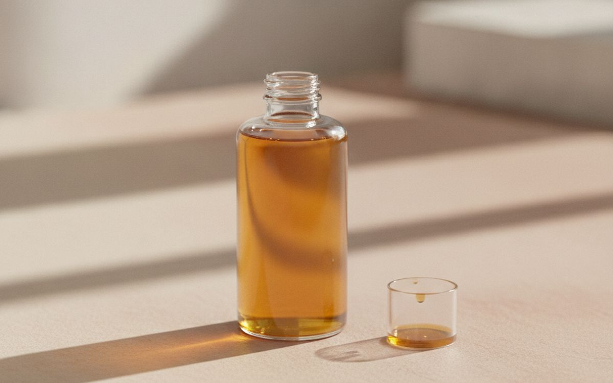
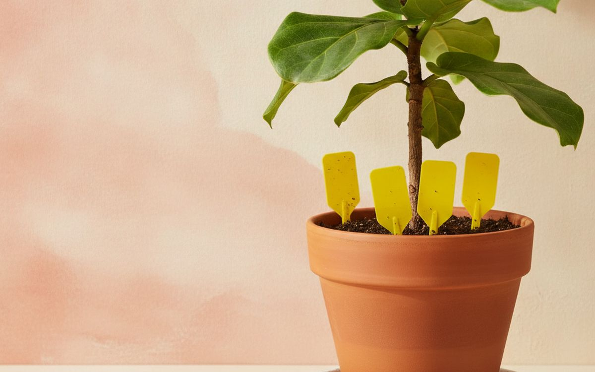
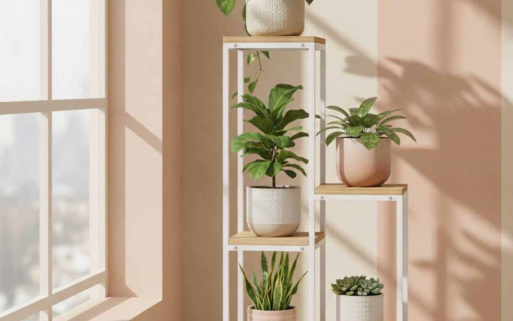

Houseplants mostly die the same way: someone loves them too much. They get watered on a schedule instead of when they are dry, they sit in a decorative pot with no drainage hole, and they live in a dim corner because that is where they look nice. The roots rot, the leaves yellow, and the plant gets blamed.
This list is ordered by leverage. The first few picks are cheap and fix the causes of most plant deaths. After that come the tough plants worth starting with, and the tools that make a small collection easy to keep going.
Prices below are approximate street prices at the time of writing and move around constantly, especially during sale events. Treat them as a rough band for budgeting, not a quote. Always check the live listing before you buy.
The short version
Nursery pots with drainage inside decorative pots
The fix that saves the most plants
Disclosure. The links on this page are affiliate links. If you buy through one we may earn a commission at no extra cost to you. It does not affect what makes this list or the order it is in.
How we picked
These picks come from horticultural extension advice, plant-care communities and long-run owner reports, cross-checked against current retail listings. We have not personally tested every item here. We favoured plants and tools that forgive mistakes, because most homes do not have perfect light or a perfect routine. If you have cats or dogs, check each plant's toxicity before buying.
At a glance
Prices are approximate at the time of writing and change often.
The picks

01 · The fix that saves the most plantsNursery pots with drainage inside decorative pots
A pot without a drainage hole is the most common plant killer there is. Water collects at the bottom, the roots sit in it, and they rot. The easy fix is to keep each plant in a plain plastic pot with holes and drop it inside the nice pot. Water in the sink, let it drain, and put it back. You get the look you want and roots that can breathe. Buy the plastic pots one size larger than the root ball, not three sizes larger. The case for it: prevents root rot, the top cause of plant death, keeps your decorative pots, and makes repotting easy. The trade-off is real: check for water pooling in the outer pot and too big a pot holds too much wet soil, so weigh that against how often it would actually get used.
$10-30Trade-off: Check for water pooling in the outer pot
Why it is here
- Prevents root rot, the top cause of plant death
- Keeps your decorative pots
- Makes repotting easy
Worth knowing
- Check for water pooling in the outer pot
- Too big a pot holds too much wet soil

02 · Knowing when to waterA cheap moisture meter
Watering every Sunday ignores the season, the light and the plant. A simple probe meter tells you whether the soil is dry at root level, not just on top. Water when it reads dry for most plants, and you will stop drowning them. No batteries needed on basic models. After a few weeks, you learn what dry feels like and barely need it. The case for it: stops overwatering, cheap and battery-free, and teaches you each plant's rhythm. The trade-off is real: readings are rough, not exact and wipe the probe between pots to avoid spreading pests, so weigh that against how often it would actually get used.
$8-15Trade-off: Readings are rough, not exact
Why it is here
- Stops overwatering
- Cheap and battery-free
- Teaches you each plant's rhythm
Worth knowing
- Readings are rough, not exact
- Wipe the probe between pots to avoid spreading pests

03 · Healthy rootsChunky, well-draining potting mix
Garden soil and dense, cheap potting compost stay wet too long indoors. Most houseplants want an airy mix with bark, perlite or coco chips so water drains and air reaches the roots. Buy a mix labelled for houseplants or aroids, or add perlite to a standard mix. When you repot a new plant from the shop, this is what to put it in. The case for it: keeps roots from staying soggy, suits most common houseplants, and easy to improve with perlite. The trade-off is real: chunky mixes dry out faster and cacti and succulents need an even grittier mix, so weigh that against how often it would actually get used.
$10-20Trade-off: Chunky mixes dry out faster
Why it is here
- Keeps roots from staying soggy
- Suits most common houseplants
- Easy to improve with perlite
Worth knowing
- Chunky mixes dry out faster
- Cacti and succulents need an even grittier mix

04 · The first plant to buyA pothos or philodendron
Pothos and heartleaf philodendron are the plants people keep alive by accident. They cope with medium light, droop visibly when thirsty and perk up within hours of watering, which teaches you their needs. They trail from shelves or climb a pole, and cuttings root in a glass of water, so one plant becomes five. They are toxic to cats and dogs if chewed, so keep them out of reach. The case for it: very forgiving, shows clearly when it needs water, and easy to propagate and share. The trade-off is real: toxic to pets if eaten and gets leggy in low light, so weigh that against how often it would actually get used.
$10-25Trade-off: Toxic to pets if eaten
Why it is here
- Very forgiving
- Shows clearly when it needs water
- Easy to propagate and share
Worth knowing
- Toxic to pets if eaten
- Gets leggy in low light

05 · Dim rooms and busy peopleA snake plant or ZZ plant
If you travel, forget to water, or have a darker room, these are the plants for you. Both store water in their leaves or roots and are happy to be watered every few weeks. They tolerate lower light than almost anything else, though they grow slowly there. The main way to kill them is too much water. Both are mildly toxic to pets. The case for it: handles low light and neglect, water every two to four weeks, and upright shape fits corners. The trade-off is real: slow growth in low light and overwatering is the only real risk, so weigh that against how often it would actually get used.
$15-40Trade-off: Slow growth in low light
Why it is here
- Handles low light and neglect
- Water every two to four weeks
- Upright shape fits corners
Worth knowing
- Slow growth in low light
- Overwatering is the only real risk

06 · Rooms without good windowsA full-spectrum LED grow light
Light is the thing people misjudge most. A room that looks bright to you can be deep shade for a plant. A full-spectrum LED grow light on a timer gives plants what a window cannot, and modern ones look like a normal white light rather than purple. Clip-on and bulb styles are cheap. Set the timer for 10-12 hours a day and keep it a foot or so above the leaves. The case for it: grows plants in dark rooms, built-in timers on many models, and white light looks normal in a home. The trade-off is real: adds to the electricity bill slightly and too close can scorch leaves, so weigh that against how often it would actually get used.
$20-60Trade-off: Adds to the electricity bill slightly
Why it is here
- Grows plants in dark rooms
- Built-in timers on many models
- White light looks normal in a home
Worth knowing
- Adds to the electricity bill slightly
- Too close can scorch leaves

07 · Watering the soil, not the leavesA narrow-spout watering can
A long, thin spout gets water to the base of the plant under the leaves and into packed shelves without spilling. It sounds minor, but pouring from a glass splashes soil and wets leaves, which can cause spots and rot. A one-litre can is easy to handle and fill in a bathroom sink. The case for it: precise watering under leaves, no splashes on furniture, and easy to handle. The trade-off is real: small cans need refilling for big collections and metal cans can rust inside, so weigh that against how often it would actually get used.
$12-25Trade-off: Small cans need refilling for big collections
Why it is here
- Precise watering under leaves
- No splashes on furniture
- Easy to handle
Worth knowing
- Small cans need refilling for big collections
- Metal cans can rust inside

08 · Spring and summer growthLiquid houseplant fertiliser
Potting mix runs out of nutrients after a few months. A diluted liquid fertiliser added to the watering can every few weeks in spring and summer keeps leaves green and new growth coming. Use it at half the label strength to be safe, and stop in winter when plants rest. One bottle lasts a small collection a year or more. The case for it: keeps plants green and growing, one bottle lasts a long time, and easy to add to the watering can. The trade-off is real: too much burns roots and not needed in winter, so weigh that against how often it would actually get used.
$8-15Trade-off: Too much burns roots
Why it is here
- Keeps plants green and growing
- One bottle lasts a long time
- Easy to add to the watering can
Worth knowing
- Too much burns roots
- Not needed in winter

09 · Fungus gnats and pestsSticky traps and insecticidal soap
Fungus gnats, the little flies around wet soil, are the most common houseplant pest. Yellow sticky traps catch the adults, and letting the soil dry out between waterings stops them breeding. For aphids, mealybugs and spider mites, a gentle insecticidal soap spray handles most early cases. Check new plants before they join the rest; many pests arrive from the shop. The case for it: catches gnats quickly, soap spray handles common pests, and cheap and pet-safer than harsh sprays. The trade-off is real: traps are not pretty and serious infestations may mean losing the plant, so weigh that against how often it would actually get used.
$10-20Trade-off: Traps are not pretty
Why it is here
- Catches gnats quickly
- Soap spray handles common pests
- Cheap and pet-safer than harsh sprays
Worth knowing
- Traps are not pretty
- Serious infestations may mean losing the plant

10 · Getting plants into the lightA plant stand or shelf
The best spot in most homes is within a few feet of a window, and that space is limited. A tiered stand or narrow shelf puts several plants in good light instead of scattering them around dark corners. Wood or metal both work; make sure the shelves are water-resistant or use saucers. The case for it: moves more plants into good light, tidies a collection, and makes watering one trip. The trade-off is real: takes floor space by the window and unsealed wood stains from drips, so weigh that against how often it would actually get used.
$25-80Trade-off: Takes floor space by the window
Why it is here
- Moves more plants into good light
- Tidies a collection
- Makes watering one trip
Worth knowing
- Takes floor space by the window
- Unsealed wood stains from drips
Common questions
How often should I water my houseplants?
When the soil is dry at root level, not on a schedule. For many plants that is every one to two weeks in summer and less in winter.
What is the easiest houseplant?
Pothos, snake plant and ZZ plant are the most forgiving. Start there.
Why are the leaves turning yellow?
Usually overwatering or poor drainage. Check the pot has a hole and let the soil dry more between waterings.
Are houseplants safe for cats and dogs?
Many common ones are toxic if chewed, including pothos, philodendron and snake plant. Check the ASPCA plant list before buying.
Today's deals
See what is discounted right now.
Deals →← All guides
As an AliExpress affiliate we earn from qualifying purchases. Prices and availability are accurate as of the date of publication and may change.